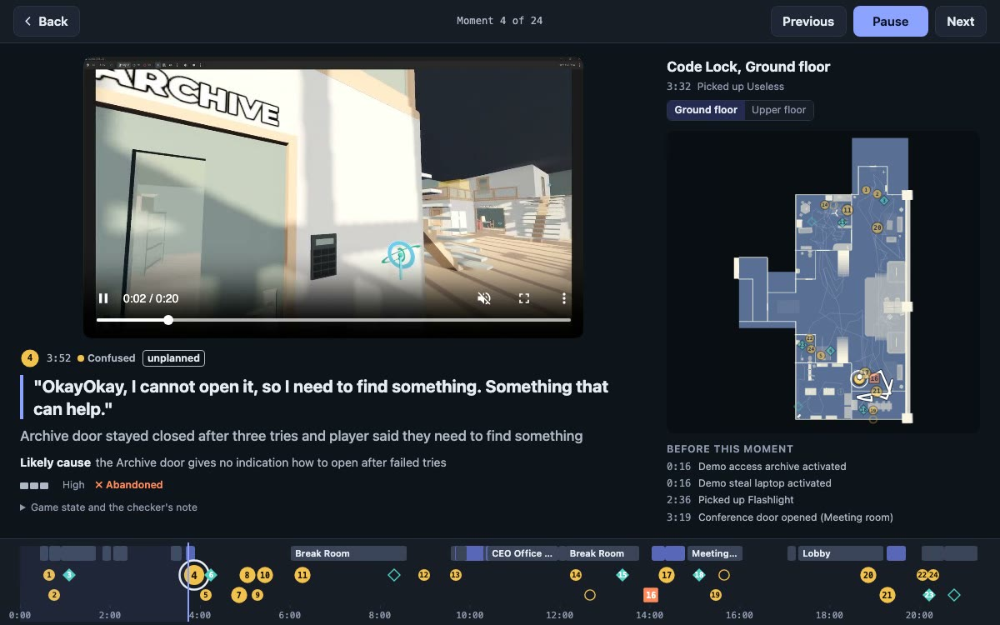

Playtest Lens
Watching a playtest takes as long as the playtest. Playtest Lens watches it for you: Meta's Muse Spark finds where the player was confused, stuck or surprised, checks each moment against its clip, the player's words and the game's event log, and puts it all on one page with the level's map.

Player 1 21 minutes
A first-time player in the Lobby level. She kept coming back to the Archive's code lock.
Player 2 not used for tuning
A second first-time player, 6 minutes. Nothing was tuned on this session; the developer compared it with his blind notes.
Each report has two modes: Read, a page to scroll, and Watch, which opens from any moment. The clips carry the players' voices: turn the sound on in the clip to hear them. Normal mode runs on Muse Spark 1.2 and Muse Voice Transcribe through the Meta Model API; the open-weights pages run on Muse Spark Open on Baseten.
Code, the Godot add-on and how it works: github.com/Naryadchikov/playtest-lens. The test level is the COGITO demo by Phazorknight (MIT), prior work. Built for the Meta Global AI Developer Hackathon, 2026.